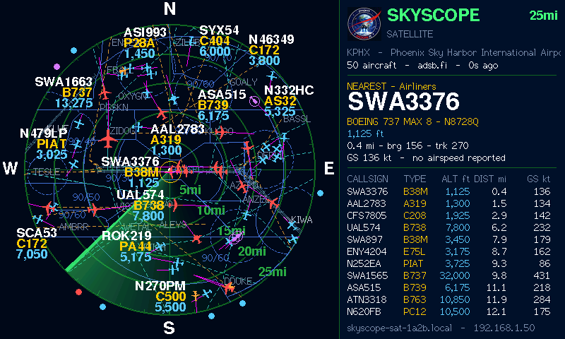

SkyScope Satellite
A 4.3-inch display that mirrors your SkyScope radar anywhere in the house.

Contents
- What the Satellite does
- What you need
- Installing the firmware
- First start: joining Wi-Fi
- Connecting to your SkyScope
- Reading the screen
- The Satellite's own web page
- Display hardware (pins)
- Troubleshooting
- Building from source
- Credits and licence
1. What the Satellite does
SkyScope Satellite turns a small 4.3-inch display into a second screen for SkyScope. Put it on a desk, shelf or bedside table, and it shows the same live radar as your SkyScope: the same centre and range, the same filters, the same runways, airspace and SID/STAR routes, and the same emergency and watchlist highlights.
All the work happens on the computer running SkyScope (usually a Raspberry Pi). The Satellite asks it for the picture once a second over your Wi-Fi and draws it, moving the aircraft smoothly between updates. You change everything (range, filters, map) on SkyScope's settings page and every Satellite follows. Several Satellites can follow one SkyScope.
| On the Satellite | Comes from SkyScope |
|---|---|
| Radar scope with rings, sweep and aircraft symbols | Range, rings, units, sweep speed and trail, symbols and colours |
| Map: runways, centrelines, airspace, SIDs and STARs, labels | The Map tab's choices |
| Aircraft tags, the nearest-aircraft card and the list | The Filters, Presets and Alerts tabs |
2. What you need
| Item | Details |
|---|---|
| Display board | Sunton ESP32-8048S043, sold as “4.3 inch ESP32-S3 display 800×480”; check the listing names the 8048S043. It has an ESP32-S3 with 16 MB of flash and 8 MB of PSRAM, an 800 × 480 screen and a touch panel. Choose the capacitive touch version (GT911) if offered; the resistive one works but its touch is not used. |
| USB cable | USB-C data cable (a charge-only cable won't let you install the firmware). |
| Power | Any 5 V USB supply of 1 A or more. Once installed, the computer is no longer needed. |
| Wi-Fi | A 2.4 GHz network (the ESP32 can't use 5 GHz). |
| Computer, once | To install the firmware: Chrome or Edge on Windows, macOS, Linux or ChromeOS (browser method), or PlatformIO (from source). |
| SkyScope | SkyScope 1.1 or later running on the same network, with its settings page on (port 7700, the default). See the SkyScope guide. |
| Case (optional) | A 3D-printable desk case styled like a radar console, in the case folder of the SkyScope Satellite project. It fits both the Satellite and the Mini; measure your board first, as its instructions explain. |
3. Installing the firmware
There are two ways. Most people should use the browser: nothing to install on your computer.
From a web browser (recommended)
- Download skyscope-satellite-1.1.1.bin from the latest release (under Assets).
- Plug the display into your computer with the USB-C cable.
- Open https://espressif.github.io/esptool-js/ in Chrome or Edge. Leave the baud rate at 921600 and press Connect. Pick the port that appears (often “USB JTAG/serial debug unit” or “USB Single Serial”).
No port listed? Hold the board's BOOT button, press and release RST (or unplug and replug the cable), then let go of BOOT and press Connect again. On Windows a driver install is occasionally needed for the CH340 chip some boards use.
- Under Flash Address enter
0x0, choose the skyscope-satellite-1.1.1.bin file, and press Program. It takes about a minute. - When it says it's finished, press the board's RST button (or unplug and replug it). The Project Moon Pi start-up screen appears.
Updating later is the same: program the newer file. Your Wi-Fi and settings are kept unless you choose Erase Flash.
From source with PlatformIO
For developers, or to change the code. Install PlatformIO (the VS Code extension or the command line), then:
git clone https://github.com/ricsne2010/skyscope-satellite.git
cd skyscope-satellite
pio run -t upload # builds and installs over USB
pio device monitor # optional: the board's log, 115200 baudThe first build downloads the ESP32 tools and libraries (LovyanGFX, WiFiManager, ArduinoJson) and takes a few minutes.
4. First start: joining Wi-Fi
- After the start-up screen, a new display shows Wi-Fi setup instructions.
- On your phone or laptop, join the Wi-Fi network
SkyScope-Satellite-Setup(no password). - A setup page opens by itself (if it doesn't, browse to
http://192.168.4.1). Choose Configure WiFi, pick your network and type its password. The same page has a box for the SkyScope Pi address; leave it asskyscope.localor see the next section. - Press Save. The display joins your network and starts. It remembers the network from then on.
5. Connecting to your SkyScope
The Satellite looks for SkyScope at skyscope.local, port 7700. There are two ways to make that work:
- Name the SkyScope computer “skyscope”. On a Raspberry Pi:
sudo raspi-config→ System Options → Hostname, then restart it. (Raspberry Pi Imager can also set the name when you prepare the card.) - Or give the Satellite the address. On SkyScope's settings page, the About tab shows a Satellite address. Type it on the Satellite's web page (section 7) or in the Wi-Fi setup page. A numeric address like
192.168.1.20works best if your router always gives the Pi the same one (a “DHCP reservation”).
When it's connected, the line under the location on the right says how many aircraft there are, where SkyScope gets its data, and how old it is. If it can't reach SkyScope, that line turns red and says why, and the Satellite keeps trying.
6. Reading the screen
| Part | Meaning |
|---|---|
| Rings | Distance from the centre; each ring's distance is printed where it crosses the lower-right diagonal. The outer ring is the range, shown top right. |
| Symbols | Aircraft, pointing where they're heading, with a line showing about a minute of travel. Silhouettes show the kind: airliner, heavy, business jet, turboprop, light aircraft, glider, helicopter. |
| Tags | Callsign, type and altitude. When it's busy, tags that would overlap are left out (nearest aircraft first). |
| Dots on the rim | Aircraft just outside the range, in their direction (if SkyScope's rim dots are on). |
| Yellow circle | The nearest aircraft, also shown on the card at the right. |
| Flashing red, pulsing ring | An emergency squawk (7500 hijack, 7600 radio failure, 7700 emergency) or emergency status. |
| Gold circle | An aircraft on SkyScope's watchlist. |
| List | Callsign, type, altitude, distance and ground speed, nearest first, alerts on top, in SkyScope's units. |
| Bottom right | The Satellite's own address, for its web page. |
The Satellite has no touch controls: change what it shows on SkyScope's settings page.
7. The Satellite's own web page
Each Satellite has a small page of its own at the address shown at the bottom right of its screen, for example http://skyscope-sat-1a2b.local (the last four characters differ per board). It lets you change the SkyScope address and port, shows the connection state, and has an About section with the version and a link to the Display hardware page.
8. Display hardware (pins)
Boards sold as the ESP32-8048S043 have had small revisions, and similar boards use other pins. If the screen stays blank, the picture is shifted or rolls, the colours are wrong, or touch doesn't respond, you can change the display's wiring from a web page. You don't need to rebuild the firmware.
Open the Display hardware page in either of these ways:
- With the display on your Wi-Fi:
http://skyscope-sat-xxxx.local/hardware, or the link at the bottom of its settings page. - With a blank screen, or if you don't know its address: hold BOOT for 3 seconds and let go. That starts Wi-Fi setup. Join
SkyScope-Satellite-Setupand press Display hardware on the setup page. (After saving the pins, choose Configure WiFi again to rejoin your network.)
| Section | What's there |
|---|---|
| Panel data lines | The GPIO for each of the 16 colour bits: B0–B4, G0–G5, R0–R4. If red and blue come out swapped, swap the B and R rows. |
| Panel control | DE (HENABLE), VSYNC, HSYNC, PCLK and the backlight pin (-1 if there's none). |
| Panel timing | Pixel clock (4–20 MHz), the front and back porches and sync widths, the sync polarities, and the PCLK idle level. These come from the panel's data sheet. A picture that's shifted sideways or rolls usually needs different porches. |
| Touch | GT911 or none; SDA, SCL, reset and interrupt pins; and the address (0x14 or 0x5D). |
Press Save and restart. The page checks the pins first: each must be a usable GPIO (1–21 or 38–48), and no pin can be used twice. Then the board restarts with the new wiring. Restore defaults and restart puts back the Sunton ESP32-8048S043 wiring, and so does holding BOOT for 10 seconds, even when you can't see the screen.
| Default (ESP32-8048S043) | GPIO |
|---|---|
| B0–B4 | 8, 3, 46, 9, 1 |
| G0–G5 | 5, 6, 7, 15, 16, 4 |
| R0–R4 | 45, 48, 47, 21, 14 |
| DE, VSYNC, HSYNC, PCLK | 40, 41, 39, 42 (16 MHz; H porches 8/4/43, V 8/4/12; PCLK idle high) |
| Backlight | 2 |
| Touch (GT911) | SDA 19, SCL 20, reset 38, address 0x14 |
9. Troubleshooting
| What you see | What to do |
|---|---|
| “Can't find skyscope.local on the network” | Name the Pi skyscope, or enter its numeric address on the Satellite's page (section 5). Some routers and guest networks block .local names between devices. |
| “SkyScope at … answered 404” | SkyScope is older than 1.1. Update it (git pull in its folder) and restart it. |
| Connected, but no aircraft | Check SkyScope's own radar at http://<pi>:7700/radar: the Satellite shows exactly what SkyScope shows, filters included. |
| Can't open the Satellite's page | Use the numeric address shown on its screen instead of the .local name. |
| Screen stays black, but the board's light is on | Press RST. If still black, your board revision may be wired differently: set its pins on the Display hardware page (it works without the screen). If you're stuck, open an issue with a photo of the board's back and its exact listing title. |
| Picture is shifted, flickers, or the colours are wrong (blue looks red) | Adjust the timing or pins on the Display hardware page. Red and blue swapped: swap the B and R rows. |
| Changed the pins and now nothing works | Hold BOOT for 10 seconds: the default wiring comes back and the board restarts. Or press Restore defaults on the Display hardware page. |
| “Not enough memory for the screen buffers” | The board has no PSRAM, so it is a different model. This firmware needs the 8 MB PSRAM version (ESP32-S3 N16R8). |
| Stuck on the Wi-Fi setup screen | Check the password, and that the network is 2.4 GHz. Join SkyScope-Satellite-Setup again to retry. |
| Want to start over | Hold BOOT for 3 seconds and let go (forgets Wi-Fi), or use Erase Flash in the web installer and program the file again (forgets everything). |
10. Building from source and the desktop preview
The code is in C++ for the Arduino framework, built with PlatformIO. The parts: src/feed.cpp fetches from SkyScope on its own task; src/feed_parse.cpp reads its JSON; src/render.cpp draws the screen; src/scope.cpp holds the shared scope drawing (rings, symbols, tags, sweep); src/main.cpp starts everything and serves the web page. SkyScope's side is /api/satellite (traffic, once a second) and /api/satellite/map (map lines and labels, fetched only when they change), in ring units so the Satellite does no geography.
include/shapes.h holds the aircraft silhouettes and type lists. It is generated from SkyScope's own symbols.py by tools/gen_shapes.py, so all the SkyScope projects draw and classify aircraft the same way.
Desktop preview
The drawing code has no hardware calls in it, so it also builds on a computer: tools/preview draws one frame from saved data into an image, exactly as the board would draw it. The pictures in this guide were made that way. It needs a C++ compiler and the SDL2 development files (LovyanGFX uses them to pick its desktop mode):
pio run # once, to download the libraries
tools/preview/build.sh # SDL_INC=… SDL_LIB=… if SDL2 isn't installed system-wideThe comment at the top of tools/preview/preview.cpp shows its arguments.
11. Credits and licence
| What | Source | Terms |
|---|---|---|
| The radar, map and aircraft data | Your SkyScope (see its guide for its sources) | MIT |
| Graphics | LovyanGFX | FreeBSD licence |
| Wi-Fi setup | WiFiManager | MIT |
| JSON | ArduinoJson | MIT |
| Screen text | GNU FreeFont (FreeSans), as included in LovyanGFX | GPL with font exception |
| ESP32 support | Espressif Arduino core, built with PlatformIO | LGPL 2.1; Apache 2.0 |
| Built with | Claude Code (Anthropic): designed, written and tested with Claude |
 SkyScope Satellite was designed and created by Project Moon Pi, built with Claude Code (Anthropic), and is free software under the MIT licence. Source: github.com/ricsne2010/skyscope-satellite.
SkyScope Satellite was designed and created by Project Moon Pi, built with Claude Code (Anthropic), and is free software under the MIT licence. Source: github.com/ricsne2010/skyscope-satellite.